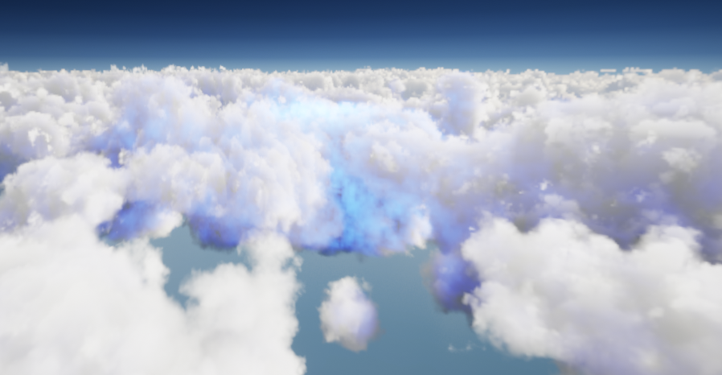
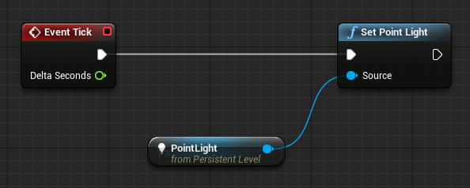
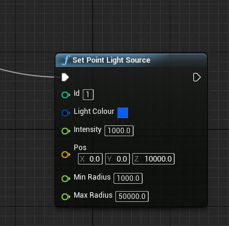
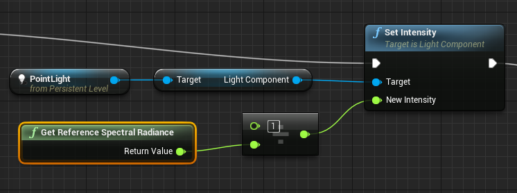
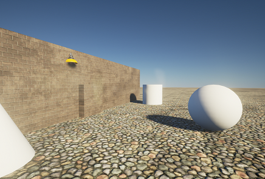
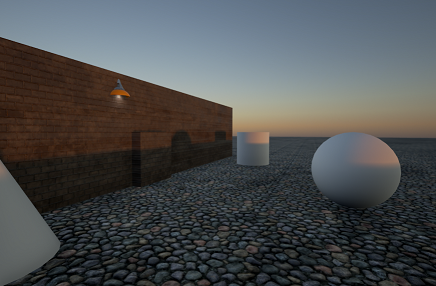
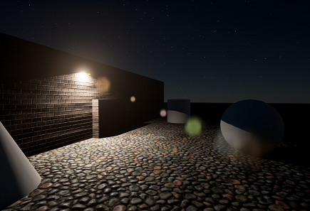

Lighting Tutorial¶
Point Lights¶
Point lights can be used to illuminate the clouds. Because of the relative scale of clouds compared to the scene, the intensity of the light must be very large in order to have a visible effect.
UE4 useage¶
This can be done with the SetPointLight Blueprint node. Attach one of your point lights in the scene to our Set Point Light function, allowing trueSKY to take the properties and apply it to the clouds.
If you do not have a PointLight actor, you can use SetPointLightSource to create a new point light and individually apply the position, colour and intensity of a light to the clouds.
Brightness Power¶
The sky at sunrise can be less than one quarter as bright as at noon. Moonlight is hundreds of times dimmer than sunlight. Starlight is much dimmer still. The human eye adjusts to a very wide range of light conditions, but for rendering we usually apply a brightness, or exposure level, to make dark scenes visible and bright scenes clear.
The Brightness Power value for a sky sequence adjusts the light levels to compensate for this large variation by introducing a power function.
If the Power is 1.0, there is no adjustment. If it is 0.5, it will be a square-root dependence, e.g. a light 4 times dimmer than daylight would appear only half as dim, and so on.
Physical Units (trueSKY 4.1 onward)¶
trueSKY is a physically-based renderer, which means that the light and colour values generated correspond to true physical properties. The pixel colours rendered to a view are spectral radiance values. However, to keep the numbers from getting too high or low, a global adjustment is applied. This is because numerical accuracy would be lost, particularly for very dark night-time scenes, if we kept the same scale at all times. The Sky property “Brightness Power” controls this adjustment - if equal to one, there is no adjustment. Values smaller than one reduce the range of outputs - brightening dark skies and dimming very bright skies. To obtain the current value of the multiplier, use the Blueprint function “GetReferenceSpectralRadiance”. Then you can use the calculation:
spectral radiance (watts/square metre/steradian/nm) = pixel value * reference spectral radiance
You can use this value to calibrate the other lights in your scene. Say you have a point light representing an electric bulb. The brightness of this light would in reality be constant. But because trueSKY adjusts the physical value of a pixel as time passes, you must compensate for this by scaling the intensity of the bulb by the inverse of the reference radiance.
Using the spectral radiance value to modulate the intensity of lights in the scene.
So the light appears to get brighter as day turns to night. You can get the same effect using Unreal’s Eye Adaptation (Auto Exposure). But because this is a post-process effect, it cannot cope with very dark scenes - you may see banding in the sky colours due to the low numerical accuracy of very small numbers.
Spectral radiance example: Day
Spectral radiance example: Sunset
Spectral radiance example: Night
Light Units¶
If you would like to use Lux for your light units, so direct light is over 100k, you will need to switch to Photometric Units. This is done under the Lighting Section on the trueSKYActor, in the additional drop down tab. This will make your scene unbearably bright unless you know how to adjust Unreal’s Exposure settings. When using Lux, make sure to set the Brightness Power to 1 to remove the Adjustment, and be aware of the size of your Irradiance Values. This is a work in progress.
Transparency¶
In a material that uses transparency, insert the trueSKYTransparencyModifier function between the inputs and the final output node:

Using the trueSKYTransparencyModifier material function to modulate the material output values
Unity Usage¶
To do so, access the trueSKY object and call:
public void SetPointLight(int id, Vector3 pos, float min_radius, float max_radius, Vector3 irradiance)
This function will map point lights to the given id, so it can be called to both create a point light and to change the values of an existing point light.